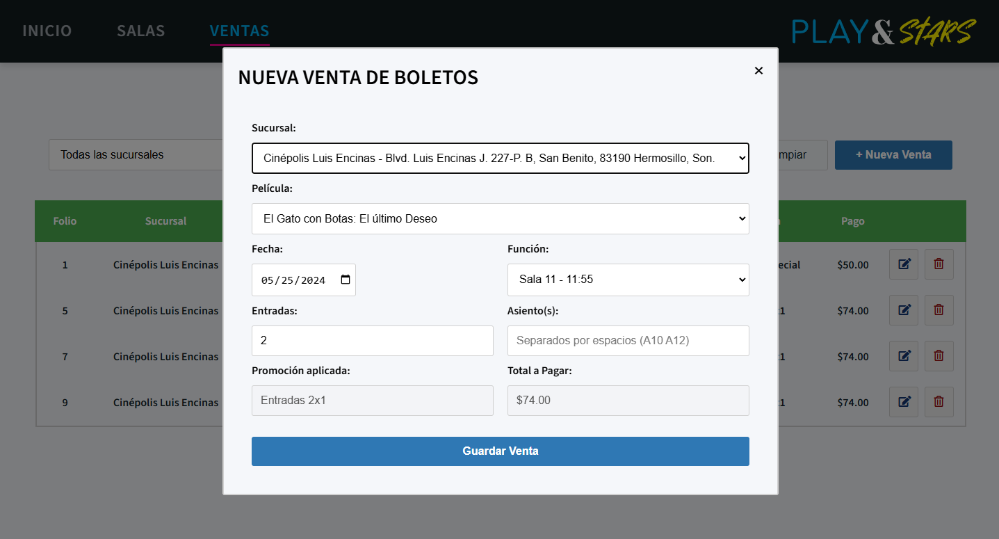
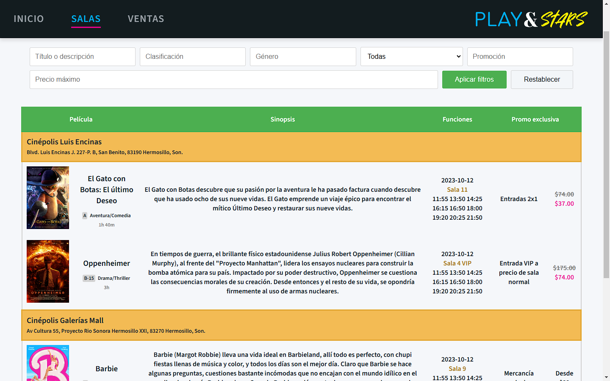
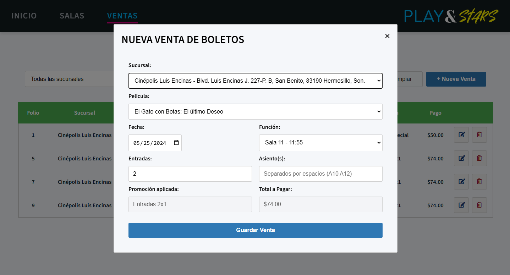
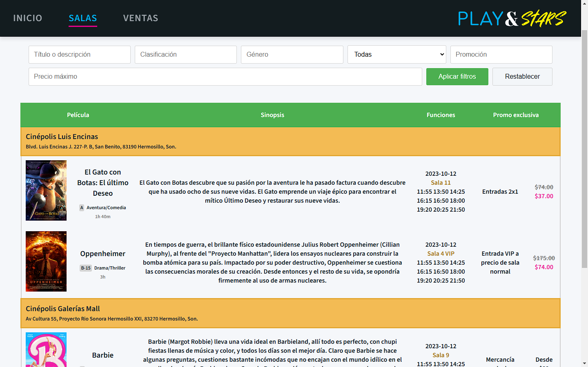

Hola.
Soy Mario López Ramonet y este es mi sitio personal
que mantendré al día con información acerca de mí, trayectoria
profesional, proyectos, vías de contacto, entre otras cosillas.
En el encabezado podrás navegar a las distintas secciones de la
página rápidamente.
Ahora que estás aquí, te invito a que tomes un vistazo.
¡Bienvenido!
Sobre mí
Soy un ingeniero de software Full-Stack egresado de la Universidad de Sonora.
Desde chico he tenido una mente curiosa y un gusto por devorar lo último en tecnología.
Me apasiona la colaboración y el intercambio de ideas, y me encanta trabajar junto a
otros para crear proyectos que tengan alto impacto en las personas.
En mis ratos libres, me gusta contribuir en varios proyectos de código abierto,
depurando, reportando bugs y subiendo pull requests. Puedes leer más acerca de
estos proyectos la sección de proyectos.
Siempre estoy en busca de una posición desafiante y gratificante dentro del ramo
de las tecnologías de la información. Si tienes un reto adecuado para mí, checa la
sección de contacto donde encontarás mi correo y redes sociales.
Habilidades
Soft Skills
- Comprometido con el equipo
- Iniciativa propia
- Comunicación continua
- Autodidacta
- Pasión por adoptar nuevas tecnologías
- Dominio rápido
- Detallista
- Crear documentación
- Idiomas: Español e Inglés (Cert. C2 Proficient)
- Metodologías SCRUM, Agile
Desarrollo Web
- HTML + CSS
- SASS / LESS
- Bootstrap
- Tailwind
- Javascript
- Typescript
- APIs CRUD & REST
- .NET Core
- ASP.NET
- Node
- PHP
- Yii 2
- React
- Angular
- Vue.js
- Svelte
- Flutter
- Nginx
- Apache
- LINQ
- SQL Server
- MySQL
- Postgres
- Unit & E2E testing
- Cypress
- Selenium
Otros
- Git
- CI/CD
- Azure
- Azure DevOps
- AWS
- Google Cloud
- Jira
- Trello
- Figma
- Photoshop
- Illustrator
- CorelDraw
- C#
- C / C++
- Python
- Java
- VMWare
- VirtualBox
- Docker
- Kubernetes
- Windows
- Linux
- Android
Experiencia laboral
Desarrollador Full Stack
eDesarrollos y Tecnología
Hermosillo, Sonora
Mar 2025 - Actual
Actualmente desarrollando un CMS (Content Management System) de giro administrativo para el seguimiento de actividades, asignación de tareas y permisos de acceso en distintos proyectos internos, con bitácora de registros, métricas de proyecto, reportes mensuales, etc.
Tecnologías: React 18, React Query, React Hooks, Typescript, Astro, AntD Forms, Tailwind, ShadCN, Vite, PHP 8.2, Yii
Practicante en Dirección de Apoyo a Programas Educativos y en Dirección de Infraestructura y Adquisiciones
Universidad de Sonora
Hermosillo, Sonora
Sep 2023 - Dic 2024
Líder técnico de equipo especializado en la digitalización, capturación, archivado y concentrado de información de registros históricos de resultados CENEVAL.
- Desarrollé un módulo de consulta con acceso mediante credenciales para su consulta interna.
- Sistematicé la elaboración de informes académicos usando Power BI, facilitando la evaluación de planes educativos.
- Asistí en la gestión de espacios físicos del campus: una de mis iniciativas fue la creación rutinas mediante Power Automate y Planner, que envían alertas automáticas al personal de mantenimiento cuando tienen tareas vencidas, lo que resultó en un aumento de cumplimiento de tareas en un 25%.
Tecnologías: PHP 5, VB.NET, SQL Server, JWT, Power BI, Power Automate, Planner, Excel, SharePoint, WordPress
Full-stack Developer
AD Sistemas Soluciones en TI
Hermosillo, Sonora
Nov 2022 - May 2023 · 7 meses
- Desarrollé módulos de reportes con datos consolidados de ventas, inventarios y movimientos de almacenes, con gráficos dinámicos y exportación a Excel y PDF.
- Migré un sistema legado en VB.NET a un stack moderno con .NET Core, SQL Server y Angular, integrando mapas catastrales y reportes de fugas de Agua de Hermosillo con la API de Google Maps.
- Optimicé queries y Stored Procedures complejos, implementando medidas de cacheo, lo cual redujo la carga inicial al compilar de 5 minutos a solo 20 segundos.
Tecnologías: .NET Core 7, LINQ , Swagger, SQL Server, Entity Fw, Angular 14, Typescript, iTextPDF, Google Maps API
Especialista de datos / Diseñador
Intercom Online Inc.
New York, NY (remoto)
Mar 2019 - Dic 2019 · 9 meses
Análisis, minería y parseo de datos de distintos sitios web para la elaboración de un motor de búsqueda para doctores de la medicina alternativa, además de diseños de la marca, elaborado de maquetas, etc.
Tecnologías: Python, BeautifulSoup4, RegEx avanzado, JSON, Cypress.
Proyectos
Play&Stars
 



Esta página es un proyecto ficticio desarrollado en HTML, CSS y Javascript como parte de la clase de Desarrollo de Frontend 2023-2 en la Universidad de Sonora.
Características:
- Navegación interactiva por anclaje y efectos de desplazamiento suave.
- Diseño atractivo y profesional con enfoque en la usabilidad.
- Diseño responsive para adaptarse a diferentes dispositivos.
- Módulo de ventas con Guardado, Lectura, Edición y Eliminado de datos (CRUD).
- Consulta de salas con filtros dinámicos.
Tecnologías: HTML, CSS, Javascript (ES6).
Ver proyecto en GitHub:
Lista de Tareas (To-do app)
App web de lista de tareas inspirada en Google Keep. Como reto aquí me propuse hacer la aplicación lo más pura posible, sin recurrir a frameworks, y sin uso de ventanas o modales.
Características:
- Interfaz simple, sencilla e intuitiva
- Diseño agradable y atractivo
- Fluidez y alto rendimiento
- Animaciones y transiciones CSS
- 100% responsiva, funciona excelente en teléfonos
- Alineamento a cuadrícula por medio de flexbox
- Autoguardado de notas al hacer click fuera
- Puedes marcar notas como hechas, asignar fechas, agregar tags o cambiar prioridad
Tecnologías: HTML, CSS, Javascript (ES6).
Ver proyecto en GitHub
Tarjeta de Crédito

Esta página fue una práctica que seguí para aprender a usar Angular y .NET Core.
Características:
- Guardado, Lectura, Edición y Eliminado de datos (CRUD).
- Forms reactivos.
- Validación de campos.
Tecnologías: HTML, CSS, Angular, .NET Core, SQL Server.
Ver proyecto en GitHub
PDS2 Store
Esta página fue un proyecto de clase grupal como parte de la materia de Práctica de Desarrollo de Sistemas 2 de la Universidad de Sonora. Utilizamos Azure DevOps para el product backlog, la asignación de tareas y creación de historias, y GitHub para el flujo de desarrollo (Commits, Pull Requests e Issues).
Características:
- Guardado, Lectura, Edición y Eliminado de datos (CRUD).
- Forms reactivos.
- Validación de campos.
- Carrito de compras con flujo completo
- Sistema de roles
- Módulo de vendedores
- Panel de administrador
Tecnologías: HTML, CSS, Bootstrap, ASP.NET, MVC, SQL Server, Entity Framework, Dapper.
Ver proyecto en GitHub
Playground
Esta sección contiene una recopilación de mis proyectos interactivos y experimentales. Aquí puedes explorar diferentes demostraciones de código que muestran mis habilidades en HTML, CSS y JavaScript. Cada proyecto está diseñado para resaltar una técnica o concepto específico.